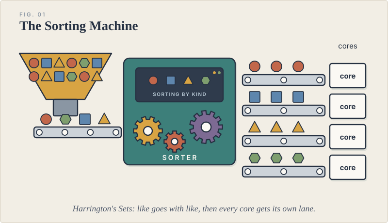
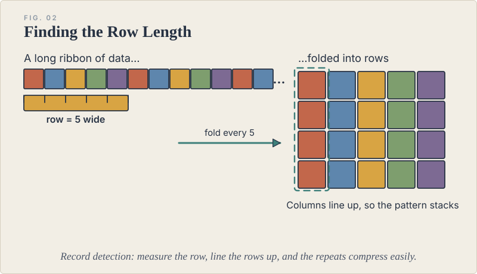
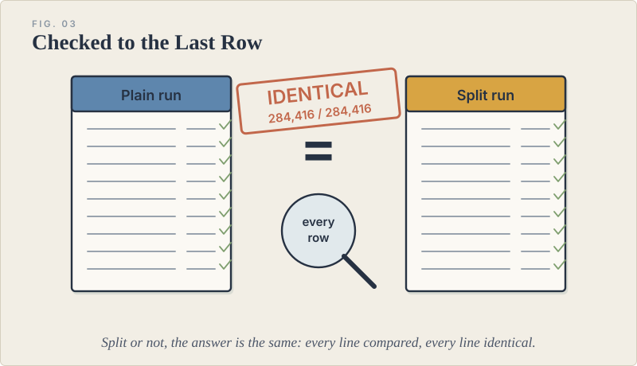
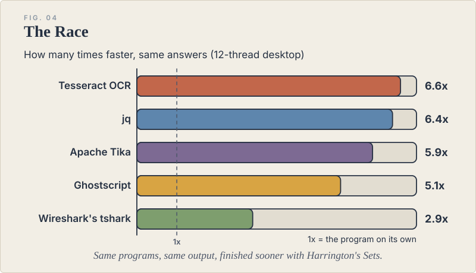

    <section class="content-section">
      <div class="container">
        <div class="content-layout">
          <article class="content-card">
            <h2>How Harrington's Sets Works</h2>
            <figure class="hs-fig"></figure>
            <p>Most data is a mix of different kinds of material packed together, and most programs work through it one piece at a time on a single processor core. Harrington's Sets begins by sorting that data, putting like with like, so that each group can be handled on its own and every core in the machine gets its own lane of work. Because the groups are never the same size, the largest are started first and the smaller ones fill in around them, which keeps every core busy to the end instead of leaving most of them waiting on one.</p>
            <p>Sorting would be useless if the original order were lost, so a small tracker records where every piece came from, much like a coat-check ticket. When the work is done, every piece goes back exactly where it started, which is why the method is entirely lossless. It began in compression and now speeds up programs that have always run on a single core without changing those programs at all.</p>
          </article>

          <article class="content-card">
            <h2>Making Data Smaller</h2>
            <figure class="hs-fig"></figure>
            <p>A great deal of data is really a table in disguise. Images, spreadsheets, banking files and sensor recordings repeat the same row layout over and over, but a standard compressor sees only one long ribbon of bytes. My record-detection step measures that row length on its own and lines the rows up before compressing, so matching columns sit side by side and compress far better. It brings that advantage to standard tools such as zstd, xz and 7-Zip, and it is built into my own compressor, HCM (the Harrington Compression Method), which models data by its structure.</p>
            <p>Not everything can be made smaller. Data that is already compressed or truly random is set aside and stored as it is, so no time is wasted on it, and everything else goes through the compressor. All of it is lossless, so what comes back out is exactly, byte for byte, what went in.</p>
          </article>

          <article class="content-card">
            <h2>How I Prove It</h2>
            <figure class="hs-fig"></figure>
            <p>I hold my work to strict proof. Every test uses public or openly generated data so that anyone can repeat it, every file is fingerprinted, and every result is decompressed or re-run and compared byte for byte or line by line with the original program. I publish what failed alongside what worked, including the programs where my method gave no gain.</p>
            <p>The hardest test so far was the Zeek network monitor, where timing matters. Splitting one saved network capture across many cores would normally throw off Zeek's internal clocks, so I keep every piece on the same clock and merge the results the way a single Zeek run would have written them. Every one of 284,416 log rows matches an ordinary Zeek run exactly, which matters most in forensic work, where results must be reproducible.</p>
          </article>

          <article class="content-card">
            <h2>Results</h2>
            <figure class="hs-fig"></figure>
            <p>On a 12-thread desktop, programs that have always run on one core finished several times sooner with output identical to the original program. Tesseract OCR ran 6.6 times faster, jq 6.4 times, Apache Tika 5.9 times, Ghostscript 5.1 times and Wireshark's tshark 2.9 times.</p>
            <h3>My Compression Software, Best Results First</h3>
            <ol>
              <li><strong>HCM (Harrington Compression Method).</strong> On real EarthScope seismic recordings it produced 28.6 MB where Steim2, the seismic standard, produced 42.4 MB. On generated banking files (ACH payments and ATM journals) it came out 22 to 47 percent smaller than the best standard tool. On the Canterbury corpus it edges out ZPAQ at its strongest setting while decoding more than three times faster, and on the Silesia corpus it is smaller than every LZ- and BWT-based compressor in the TurboBench suite. It is built for archiving, so it trades decoding speed for size.</li>
              <li><strong>hs_zstd (Harrington's Sets with zstd).</strong> It decompresses a 20 GB file 2.66 times faster than zstd and 1.5 to 1.7 times faster than pzstd, every block inside is a standard zstd frame, and on mixed data its grouped blocks come out smaller than plain blocks.</li>
              <li><strong>7z-hi and the other -hi encoders (xz, LZMA, ZPAQ).</strong> These choose better settings for each file. With 7z-hi every file of the Silesia corpus came out smaller than 7-Zip Ultra, about 3 percent overall, and the standard, unmodified 7-Zip still extracts it.</li>
              <li><strong>Record detection.</strong> It finds the row length of tables, images and sensor data and lines the rows up before compressing. An X-ray image under zstd came out 12 percent smaller and decoded faster, and a spreadsheet under Snappy shrank to under a third of its usual compressed size.</li>
              <li><strong>Harrington Exchange.</strong> A transform I first designed for biased random data, where it is the smallest practical compressor I have tested.</li>
            </ol>
            <div class="content-divider"></div>
            <p>The book, <em>Harrington's Insights: Improvements, Concepts, Strategies, Successes and Failures in Data Compression</em>, covers all of this work, including the methods that failed, and it is free to read <a href="https://github.com/CombaryMaker/Harringtons_Insights/blob/main/Harringtons-Insights.pdf">here</a>. All of the software, results and charts are on <a href="https://github.com/CombaryMaker/Harringtons_Insights">GitHub</a>.</p>
          </article>
        </div>
      </div>
    </section>
